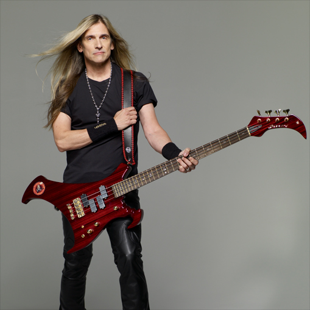
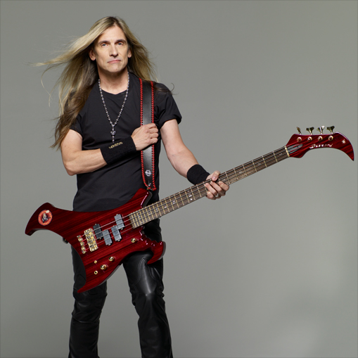

Dave Mustaine is the founder of Megadeth. He is the vocalist and rhythm guitarist of the band. Dave was originally the guitarist for Metallica until he was kicked in 1983. Megadeth was founded shortly after Dave was kicked from Metallica.
Kiko Loureiro is the current lead guitarist of Megadeth. Kiko was originally the lead guitarist for the band Angra. Kiko joined Megadeth in 2015, replacing Chris Broderick.

James LoMenzo is the current bass guitarist of Megadeth. LoMenzo originally played in Megadeth from 2006 to 2010 until original bassist David Ellefson rejoined the band. LoMenzo returned to Megadeth when Ellefson was dismissed in 2021.


Dirk Verbeuren is the current drummer for Megadeth. Dirk joined the band in 2016, replacing Chris Adler. Dirk previously played in the Swedish metal band Soilwork.